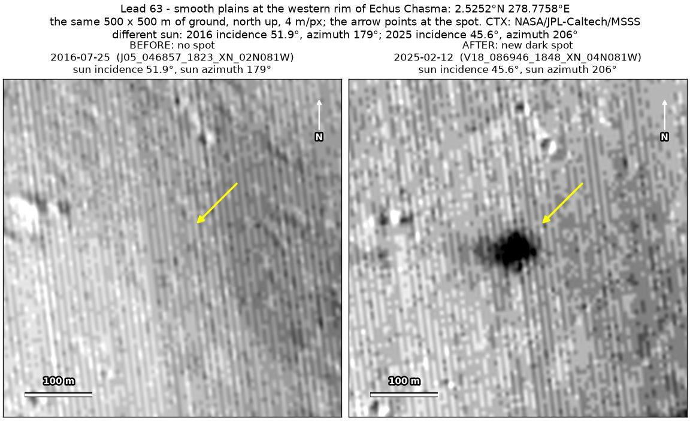
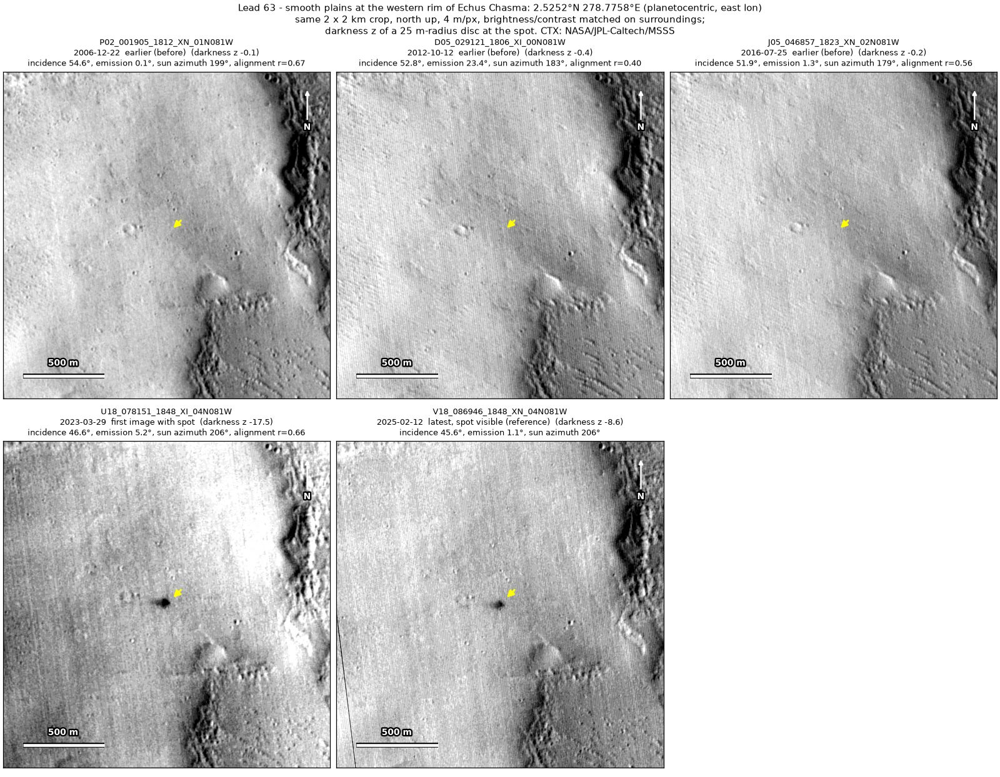
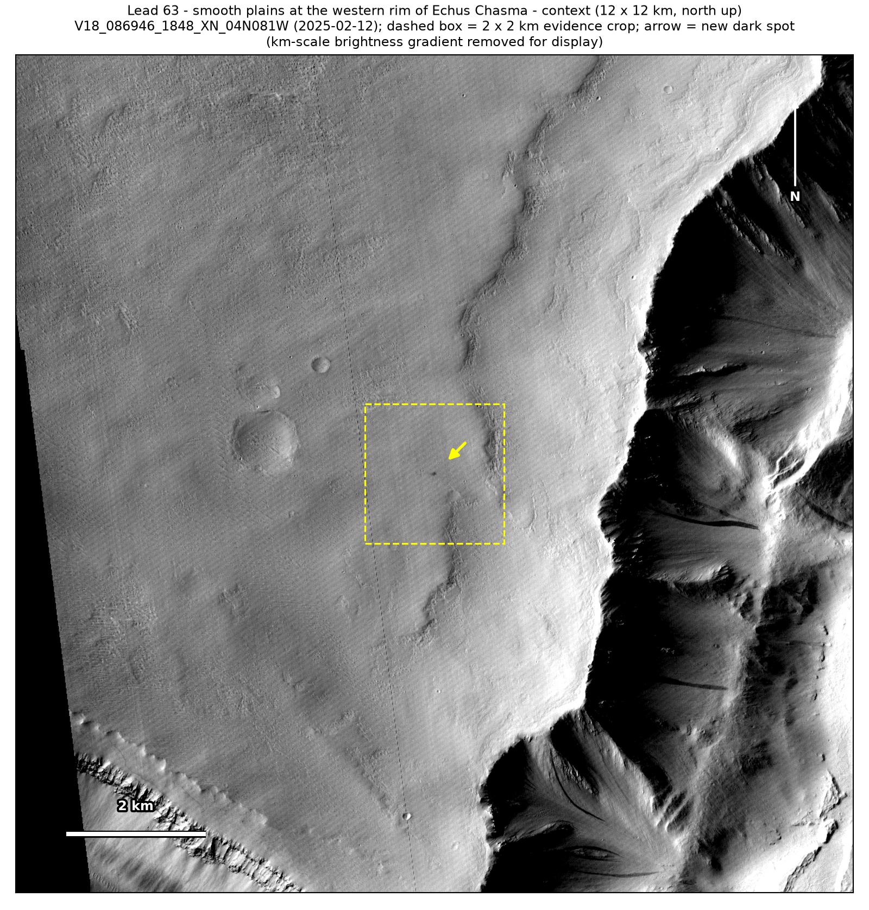
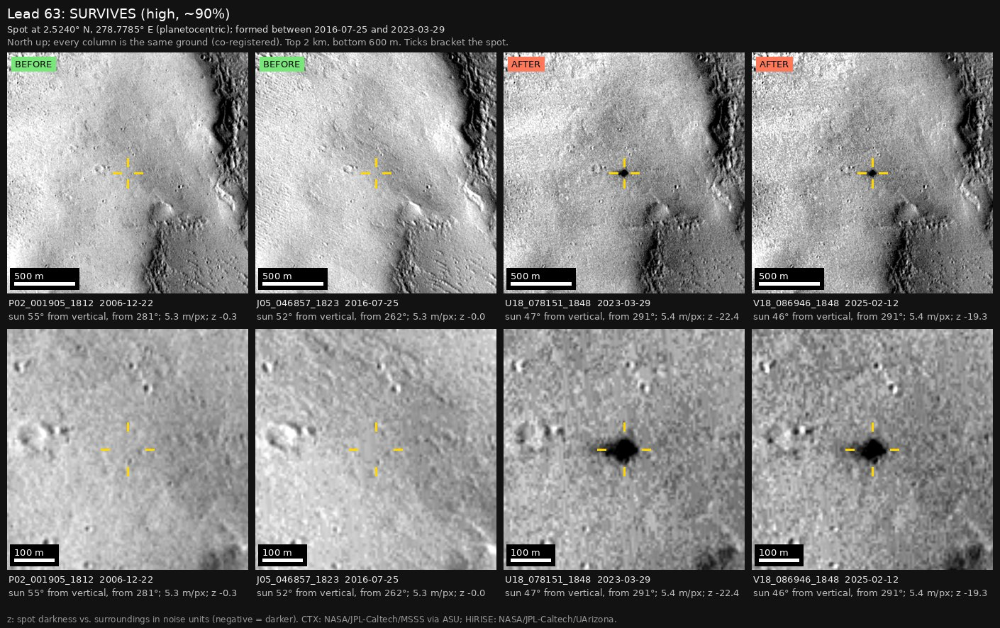

Professor of Mathematics
Paata Ivanisvili
Department of Mathematics, University of California, Irvine

← Possible new impact sites on Mars
Candidate 63: Smooth plains at the western rim of Echus Chasma
Strong · roughly 90%

What changed. A compact, very dark spot about 47 m across appeared on the smooth plains 2 km west of the rim of Echus Chasma, between July 2016 and March 2023, and is still there, smaller and fainter, in February 2025, in two CTX images from two orbits.
Why it may be a new impact. Images from 2006, 2012 and 2016, all taken under a lower sun, show plain ground there. The March 2023 and February 2025 images, from two orbits, show it fading, and a compact spot fading over two years is the usual look of a fresh blast zone. The chasma’s wall has slope streaks, but they are long and thin, and this spot lies on level ground 2 km from the rim.
- Location
- 2.525° N, 278.776° E (81.224° W)
- Absent
- 22 December 2006, 12 October 2012 and 25 July 2016
- Present
- 29 March 2023 and 12 February 2025
- Size
- Compact, very dark spot about 47 m across (60 × 50 m in the February 2025 image; larger in the March 2023 one)
- Confidence
- Strong candidate: roughly 90% likely to be a new impact.
- Nearby
- Candidate 75, 16.5 km to the north, was found in the same pair of images and first shows in the same March 2023 image.
- Caveat
- No comparable dark feature lies nearby to check that the earlier images would have shown a spot like this one. No image from the high-resolution HiRISE camera covers it; the nearest ends 3.3 km away. Like every candidate here, it is unconfirmed: see the caveat.


